Deep Generative Modeling
Table of Contents
Lecture 4: Deep Generative Modeling
Generative Modeling is Unsupervised Learning Problem where we have to find an underlying structure of the data.
Goal: Take as input training samples from some distribution and learn a model that represents that distribution @ 0:03:24
There are two class of problems:
- Density Estimation: Finding the underlying distribution of data (i.e. the probability density function)
- Sample Generation: Sampling an sample from that distribution
Neural Networks are good for this task because @ 0:04:34
- the data distribution is high dimensional
- and the distribution is complex
Some classes of Generative models are (0:07:30):
- Autoencoders and Variational Autoencoders (VAEs)
- Generative Adversarial Networks (GANs)
Both of these are latent variable models.
1. Uses of Generative Models
1.1. Debiasing
0:05:44
We can uncover underlying features in a dataset and create more fair and representative dataset.
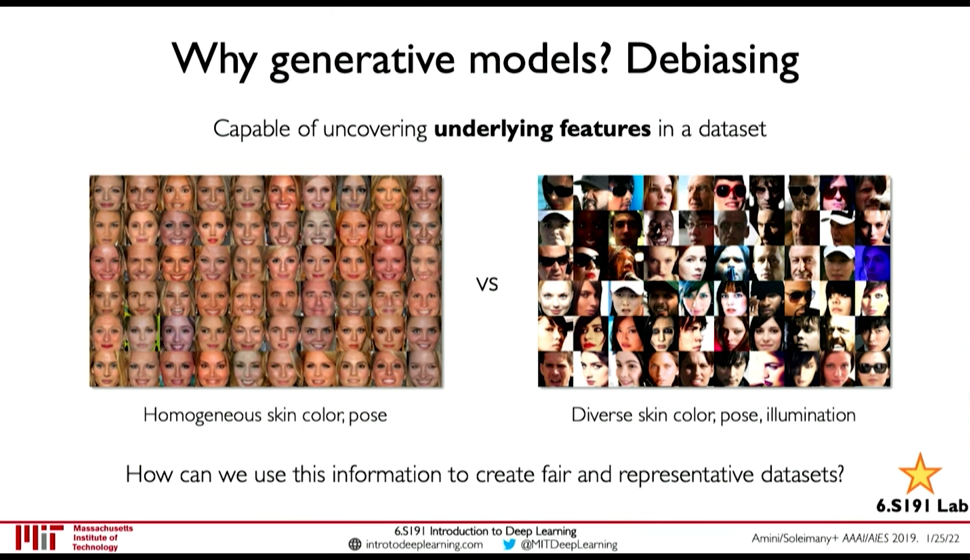
Figure 1: Debiasing
1.2. Outlier Detection
0:06:42
We can detect rare events in data which are nonetheless important for model to handle. E.g. for autonomous driving detect outliers like a deer walking and make model more capable of handling those scenarios is very important.
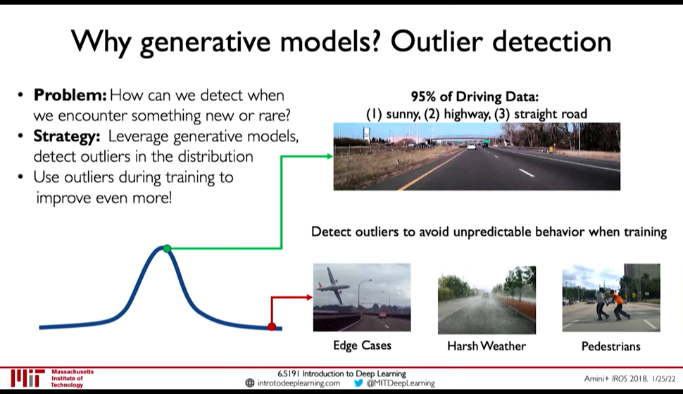
Figure 2: Outlier Detection
2. Latent Variable
0:07:50
Latent Variables are variables that we cannot observe but they influence our observation. As an analogy, take Plato's Allegory of Cave. The shadows are what we observe (the observed variables), but the actual object that cast the shadows are like the latent variables.
3. Autoencoders
0:09:14
- Autoencoders build some encoding of an input and try to reconstruct the input.
- It is an unsupervised approach for learning a lower-dimensional feature representation from unlabeled training data
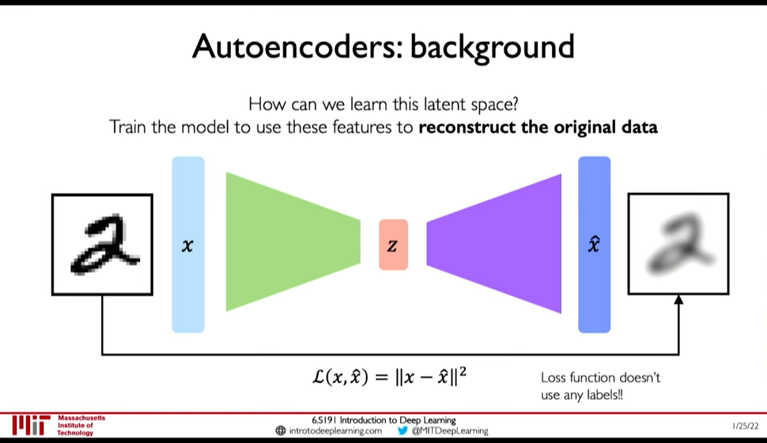
Figure 3: AutoEncoders
Reconstruction is an powerful technique in Unsupervised Learning. 0:12:40
4. Variational AutoEncoder
0:14:08
With autoencoder, the same latent variable \(z\) gives the same output \(\hat{x}\) because the decoding is deterministic. VAEs introduce stochasticity so that new samples can be generated. 0:15:09
This is done by breaking down the latent space \(z\) to a mean vector (\(\mu\)) and standard deviation vector (\(\sigma\)). The encoder outputs \(\mu\) and \(\sigma\) from which \(z\) can be sampled.
4.1. VAE Loss
0:17:30
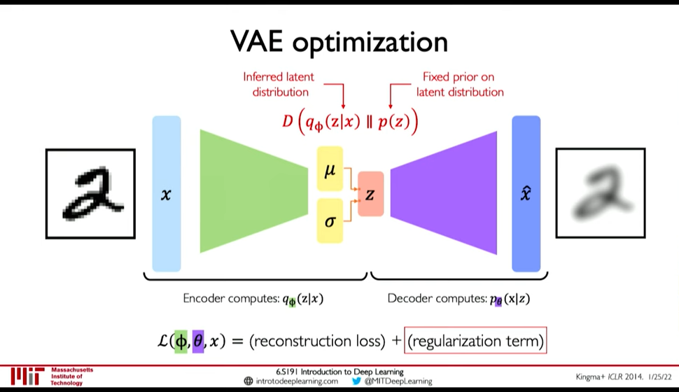
Figure 4: VAE optimization
Loss function \(L(\phi, \theta, x)\) is reconstruction loss + regularization term.
- Encoder computes: \(q_{\phi}(z|x)\) i.e. the distribution of latent representation given the input image
- Decoder computes: \(p_{\theta}(x|z)\) i.e. the distribution of images given the latent representation
- Reconstruction loss: log-likelihood (?), \(||x-\hat{x}||^2\) (0:18:24)
4.2. Regularization Loss
Regularization loss: \(D(q_{\phi}(z|x)\ ||\ p(z))\) is divergence in the two probability distribution.
- \(q_{\phi}(z|x)\) is inferred latent distribution
- \(p(z)\) is a prior distribution on the latent space
- A common choice for the prior is a Normal Gaussain distribution
- Encourages encodings to distribute evenly around the center of the latent space
- Penalize the network when it tries to "cheat" by clustering points in specific regions (i.e. by memorizing the data)
We use Regularization function so that: 0:22:31
- Latent space is continuous
- Latent space is Completeness: Sampling from latent space must give meaningful content
If regularization is not enforced: 0:24:45
- variance can be small and
- means may be distributed far apart so that there is no meaningful content in between
However, greater Regularization can adversely effect the reconstruction. So, a balance is needed.
4.3. Optimization
0:26:55 Backpropagation cannot be done through Sampling operation. So, we have to use a clever idea: Reparametrize the sampling layer \(z \sim N(\mu, \sigma^2)\) as \(z = \mu + \sigma \times \epsilon\) where \(\epsilon\) is sampled stochastically.
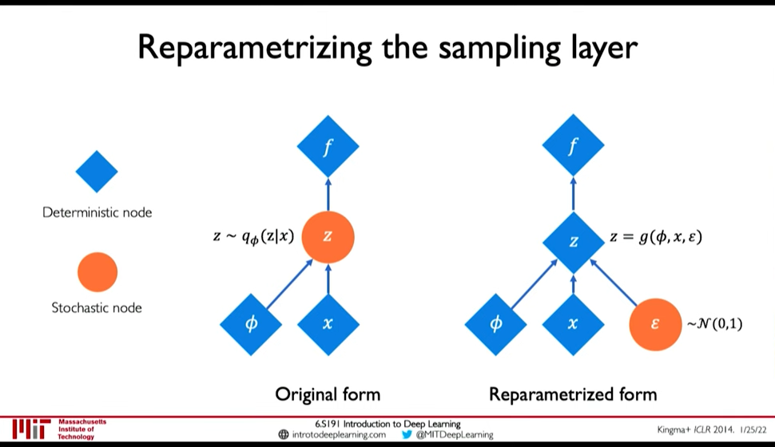
Figure 5: Reparametization of Sampling Layer
4.4. Disentanglement β-VAEs
0:30:44
We want latent variables that are uncorrelated with each other. β-VAEs achieve this by enforcing diagonal prior on the latent variables to encourage independence.
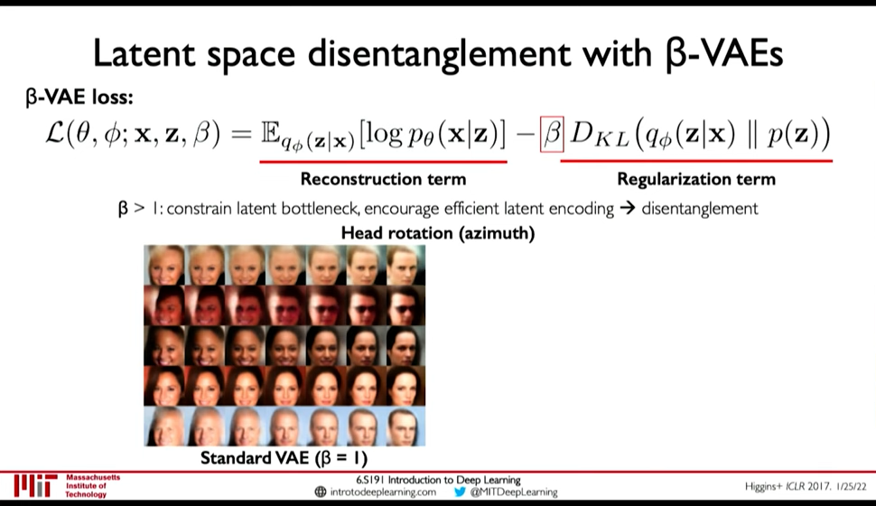
Figure 6: β-VAEs
5. Generative Adversarial Networks (GANs)
0:35:07
Idea: We don't want to explicitly model density, and instead just sample to generate new instances.
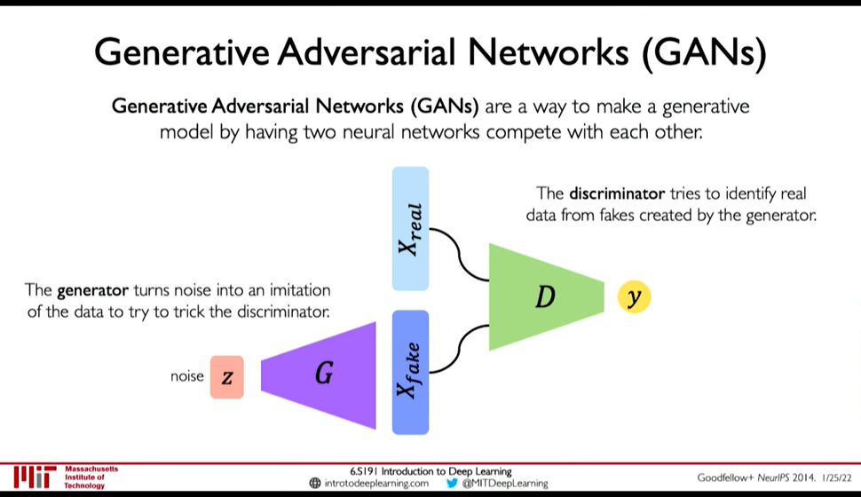
Figure 7: GANs
- Generator generates data from noise
- Discriminator tries to separate between real and fake data
GANs avoid the problem of latent space regularization in AutoEncoders, because in some way the random noise \(z\) is itself the latent space, and it being within our control is both continuous and complete. If it wasn't complete the generator won't perform good on some input.
5.1. Training GANs
0:39:43
- Loss function is Adversial Objective
Discriminator (\(D\)) tries to maximize how well it can discriminate between fake \(G(z)\) data, and real data (\(x\))
\(\arg\max_D E_{z,x}[\log D(G(z)) + \log(1-D(x))]\)
- Generator (\(G\)) tries to fool the discriminator \(D\): \(\arg \min_G E_{z,x} [\log D(G(z))]\)
So, the overall objective is:
\(\arg \min_G \max_D E_{z,x} [ \log D(G(z)) + \log(1 - D(x))]\)
0:43:06 GANs are distribution transformers. The generator maps data from gaussain noise to a target distribution. 0:43:27 We can interpolate in noise distribution to interpolate in target distribution.
5.2. Progressive Growing
0:44:51
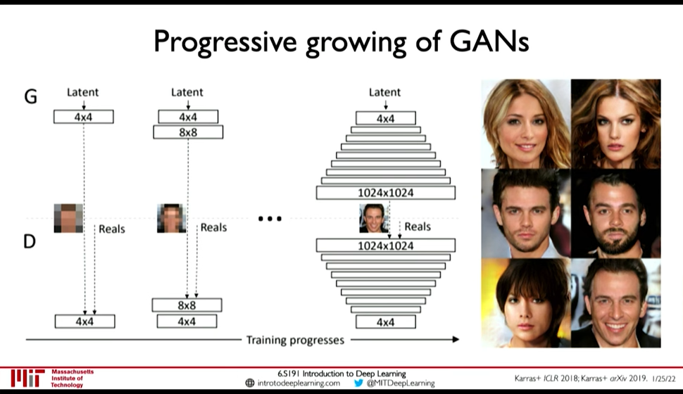 Add more layers as training progresses
- Speeds up training
- More stable training
5.3. StyleGAN(2): progressive growing + style transfer
0:45:30
5.4. Conditional GANs
0:47:18
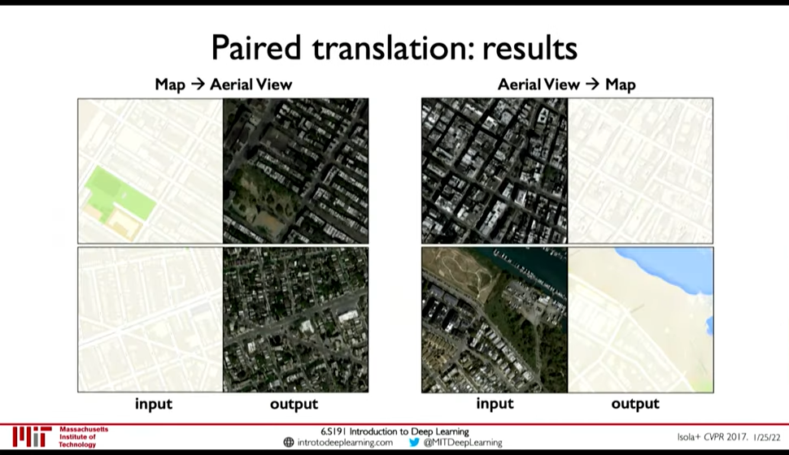
Figure 8: Paired Translation an example of Conditional GANs
5.5. CycleGAN: domain transformation
0:50:21
CycleGAN emphasize the idea of GANs being distribution transformers.
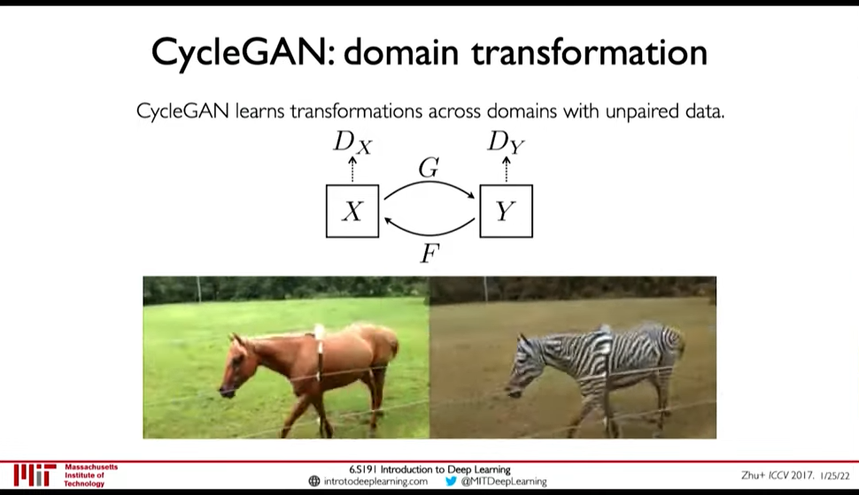
Figure 9: CycleGAN: Transformation from one distribution to another distribution.
6. Distribution Transformer
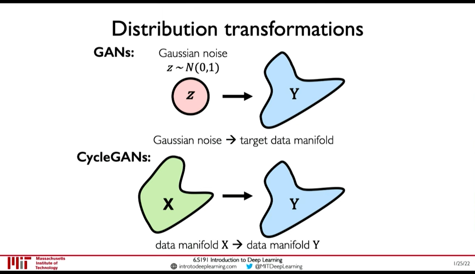
Figure 10: Distribution Transformers